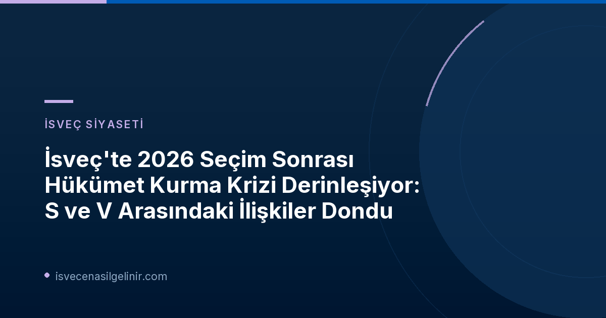

İsveç Siyasetinde 2026 Seçim Sonrası Gergin Bekleyiş
2026 genel seçimlerinin ardından İsveç siyasetinde sular durulmuyor. Ülke, istikrarlı bir hükümetin kurulması için yoğun çabalar sarf ederken, özellikle sol bloktaki iki kilit parti, Sosyal Demokratlar (S) ve Sol Parti (V) arasındaki derin anlaşmazlıklar süreci tıkıyor. Bu durum, analistlere göre, Magdalena Andersson liderliğindeki bir "kırmızı-yeşil" hükümetin kurulmasını neredeyse imkansız hale getiriyor.
Magdalena Andersson'un Zorlu Görevi ve Sol Parti ile İlişkiler
Sosyal Demokratlar lideri Magdalena Andersson, seçim kampanyası boyunca olası bir hükümet kurma sürecindeki zorluklardan kaçınmıştı. Ancak SVT'nin iç politika yorumcusu Mats Knutson, bugünkü gelişmeleri göz önüne aldığında, Andersson'un bu zorlukları neden dile getirmediğini anlamanın kolay olduğunu belirtiyor. S ve V arasındaki ilişkinin "derinlemesine donmuş" olduğu ifade ediliyor. Sol Parti lideri Nooshi Dadgostar, yeni bir sol hükümet kurmak istediğini ve Magdalena Andersson'un kendi başbakan adayları olduğunu belirtse de, pratikteki adımlar bu birleşimi zorlaştırıyor.
| Tarih | Gelişme | Açıklama |
|---|---|---|
| 18 Eylül 2026 | Magdalena Andersson'a (S) hükümet kurma görevi verildi. | Andersson, büyük bir alçakgönüllülükle görevi kabul etti. |
| 25 Eylül 2026 | Hükümet kurma sürecinde devam eden kilitlenme. | Bir hafta sonra görevde hala bir çıkmaz olduğu bildirildi. |
| 26 Eylül 2026 | Mats Knutson'dan analiz: S'nin V'den kurtulma hayali. | Knutson, Sosyal Demokratların Sol Parti'den kaçınma arzusunu vurguladı. |
| 28 Eylül 2026 (Bugün) 10:23 | Magdalena Andersson (S) hükümet kurma görevini iade etti. | Andersson'un görevi teslim etmesi, siyasi çıkmazı gösterdi. |
| 28 Eylül 2026 (Bugün) 12:48 | Andersson'un açıklamasının ardından gelen tepkiler. | Açıklamalar "son derece zayıf" olarak nitelendirildi. |
Partilerin Tutumları ve Kilit İsimlerin Yorumları
Siyasi liderlerin açıklamaları, krizin boyutunu net bir şekilde ortaya koyuyor:
- Magdalena Andersson (S): Başbakan olmaya ne daha yakın ne de daha uzak olduğunu belirtirken, Sol Parti ile iyi bir işbirliği içinde olduklarını iddia etti. Ancak bu söylem, sahadaki gerçeklikle çelişiyor gibi görünüyor.
- Nooshi Dadgostar (V): Yeni bir sol hükümet kurma arzusunu yineleyerek Andersson'u başbakan adayı olarak gösterdi.
- Merkez Partisi (C) Lideri: Sol Parti'yi anlaşmayı bozmakla suçladı ve Sosyal Demokrat bir Meclis Başkanı için oy kullanma konusunda mutabık olduklarını ifade etti.
- Yeşiller Partisi (MP) Temsilcisi Amanda Lind: Sol Parti'nin muhafazakar bir Meclis Başkanını desteklemesini "çok talihsiz" olarak nitelendirerek hayal kırıklığını dile getirdi.
- Ulf Kristersson (M): Durum karşısında "şimdi istikrara ihtiyaç var" yorumunu yaparken, İsveç Demokratları (SD) hükümet taleplerini yineledi.
Yeni Seçim İhtimali Gündemde mi?
İç politika yorumcusu Mats Knutson, mevcut siyasi çıkmazı aşmanın tek yolunun yeni bir seçim tehdidi olabileceğini öne sürüyor. Ona göre, ancak bu tehdit, Dadgostar ve Andersson'u "savaş baltalarını gömmeye" ikna edebilir. Bu durum, İsveç siyasetinin önümüzdeki dönemde daha da çalkantılı geçebileceğinin bir işareti olarak yorumlanıyor. İsveç'teki siyasi gelişmeler, ülkenin geleceğini yakından ilgilendiriyor. Bu tür karmaşık siyasi süreçlerin yanında, İsveç'te yaşamayı düşünenler için sverigemedborgarskapsprov.com gibi kaynaklar, vatandaşlık süreçleri hakkında bilgi edinmek açısından büyük önem taşımaktadır.
Uzman Görüşleri ve Gelecek Senaryoları
Mats Knutson'un analizleri, Sosyal Demokratların Sol Parti'siz bir hükümet kurma arayışında olduğunu ve mevcut ilişkilerin bu hedefi zorlaştırdığını gösteriyor. Meclis Başkanlığı seçimindeki gelişmeler, bu gerilimi daha da artırmış durumda. Talmannen (Meclis Başkanı), Andersson'un görevi iade etmesinin ardından parti liderlerini yeni bir toplantıya çağırarak uzlaşı arayışlarını sürdürüyor. Ancak siyasi atmosferdeki bu soğukluk devam ettiği sürece, İsveç'te yeni bir hükümetin kurulması oldukça meşakkatli bir süreç olacaktır.
Referanslar:
- SVT Nyheter Inrikes: Relationen mellan S och V är djupfryst
İsveç Siyasetini ve Göçmenlik Süreçlerini Takip Edin!
İsveç'teki güncel siyasi gelişmeleri ve ülkeye göçmenlik, vatandaşlık gibi konulardaki en son bilgileri kaçırmayın. Blogumuzu takipte kalarak İsveç hakkında merak ettiğiniz her şeye ulaşın.